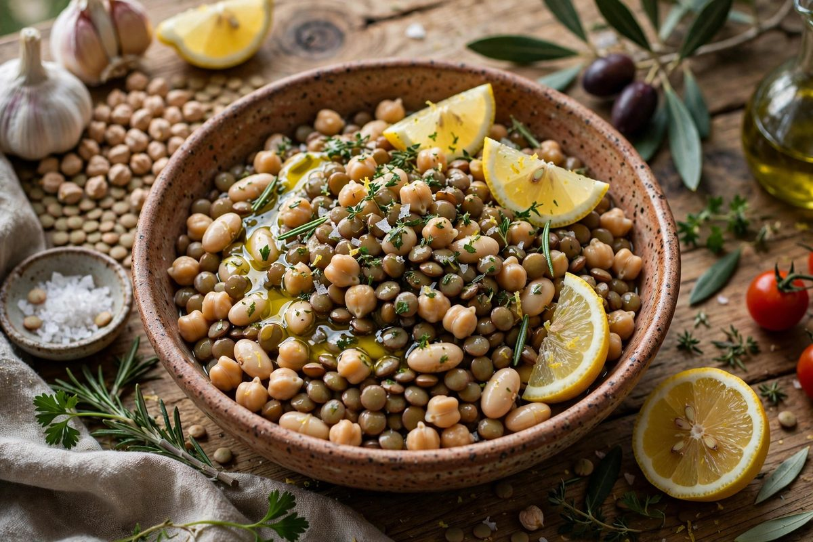

Home » Guides
Legumes and Beans

Legumes — lentils, chickpeas, beans, and peas — are the quiet heroes of the Mediterranean diet. They are cheap, filling, rich in fibre and protein, and they appear in soups, stews, salads, and dips across the region. This guide explains why they matter, how to cook them, and the classic dishes that make them delicious.
Why legumes are central
Legumes provide plant protein, soluble fibre, iron, folate, and magnesium, all at very low cost. The fibre helps control blood sugar and cholesterol, and it feeds the gut microbiome. Because they are so filling, legumes help with weight management without any sense of deprivation. In the traditional Mediterranean pattern, legumes are eaten several times a week, often as the main protein in a meal rather than a side dish. They also have a small environmental footprint, which makes them a sustainable choice.
Cooking dried and tinned legumes
Dried lentils need no soaking and cook in twenty to thirty minutes. Dried chickpeas and beans need soaking overnight and then simmering for one to two hours, or pressure cooking for much less time. Tinned legumes are a convenient shortcut: rinse them well to remove excess salt and the gas-causing compounds in the liquid. Cook legumes in unsalted water and add salt near the end, since salt can toughen the skins during cooking. A bay leaf, garlic, and a glug of olive oil in the pot add flavour from the start.
Classic Mediterranean dishes
Hummus, made from chickpeas, tahini, lemon, and garlic, is the best-known legume dish and works as a dip, spread, or sauce. Lentil soup with carrots, celery, and cumin is a staple across the region. White bean stew with greens and olive oil is a simple, hearty dinner. Chickpea salad with tomato, onion, and parsley is a quick lunch. Falafel, made from soaked chickpeas or broad beans, is a beloved street food. Fasolada, the Greek bean soup, is often called the national dish of Greece.
Making legumes part of the week
Aim for legumes at least three times a week. Keep tinned chickpeas and beans in the cupboard so a meal is always ten minutes away. Add lentils to soups and stews, toss beans into salads, and spread hummus on bread instead of butter. If beans cause digestive discomfort, start with small portions and increase gradually, and rinse tinned beans thoroughly. Most people adjust within a couple of weeks, and the gut benefits are worth the patience.
Legumes around the world
Legumes are eaten in almost every cuisine, and the Mediterranean versions are just the start. In India, lentils become dahl; in the Middle East, chickpeas become hummus and falafel; in Mexico, black beans fill tacos; in Ethiopia, lentils make a spicy stew. Learning a few of these dishes adds variety to your week and shows how versatile legumes are. The principles are the same everywhere: soak or rinse, cook with aromatics, and season well. Once you are comfortable with lentils, chickpeas, and beans, try new varieties — black-eyed beans, butter beans, or puy lentils — and discover how different they taste.
Frequently Asked Questions
How often should I eat legumes?
The Mediterranean pattern suggests legumes at least three times a week, and many people eat them daily. They are an excellent main protein source.
Are tinned beans as good as dried ones?
Nutritionally they are very similar. Rinse tinned beans to reduce salt, and choose tins without added sugar. Dried beans are cheaper and give you more control over texture.
Do beans cause bloating?
They can at first, because of their fibre and certain sugars. Start with small portions, rinse tinned beans well, and increase gradually — most people adapt within two weeks.